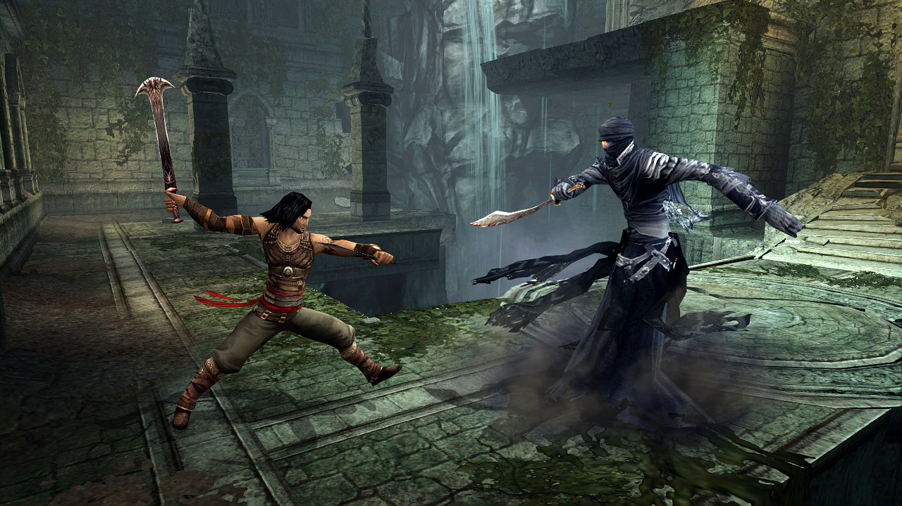

Prince of Persia: Warrior Within is an action-adventure video game and sequel to Prince
of Persia: The Sands of Time. Warrior Within was developed and published by Ubisoft, and
released on December 2, 2004 for the Xbox, PlayStation 2, GameCube, and Microsoft Windows.
It picks up where The Sands of Time left off, adding new features, specifically, options in
combat. The Prince has the ability to wield two weapons at a time as well as the ability to
steal his enemies' weapons and throw them. The Prince's repertoire of combat moves has been
expanded into varying strings that allow players to attack enemies with more complexity than
was possible in the previous game. Warrior Within has a darker tone than its predecessor
adding in the ability for the Prince to dispatch his enemies with various gory finishing
moves. In addition to the rewind, slow-down, and speed-up powers from Sands of Time,
the Prince also has a new sand power: a circular "wave" of sand that knocks down all
surrounding enemies as well as damaging them.